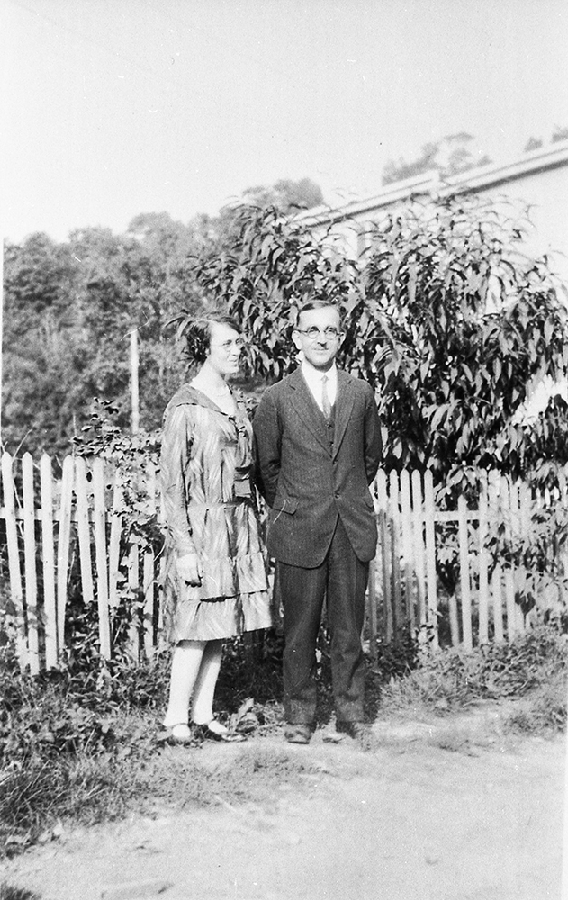
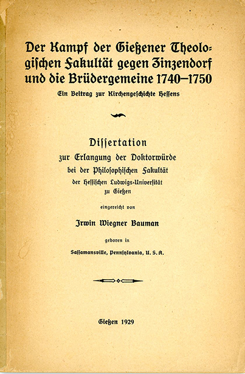

Marriage and Life in Germany
Irwin and Mary met when he was the principal of a high school and she was a teacher in a Pennsylvania school district north of Philadelphia. Once they went to New York city to see the museums there and Mary was impressed that he knew so much about history and could answer so many of her questions. After Mary's first year there, he encouraged her to attend Penn State College with him for a summer for teacher training courses. There he proposed to her.
They had a 5 year engagement and during much of the time they were seperated. Irwin attended Bluffton College for two years while she continued to teach in Pennsylvania. Then they both attended Bluffton College for a year until Irwin graduated. Irwin went to Hartford Seminary in Connecticut for three years, and Mary finished her degree, graduating in 1926. After he finished at Hartford, Irwin got a scholarship to study in Germany. Mary thought that she should stay in the U.S. and work to earn money before they married. Not wanting to go to Germany without Mary, Irwin, with the aid of a persuasive letter from one of his professors convinced her to marry him without further delay.
On the morning of 1926 June 15, Irwin, his brother Stanley, his mother, and Mary drove to the Saylorsberg post office in order to pick up the wedding ring. From there they drove on to the county seat in Stroudsberg where they picked up the marriage license, then they went back to the parsonage where Irwin and Mary were married. They were back to Mary's home by noon. There they ate cake with Elmer and Florence Marsh.
The next day Irwin and Mary went to New Hampshire for the summer. Irwin served as the pastor of a small church there. The couple lived in a small, old, furnished house on the side of a hill . Irwin sometimes shot ground hogs there for them to eat. Getting other meat was a problem because they did not own a car and there was no butcher wagon, and besides that they loved the ground hog meat.
That fall they sailed to Germany. They sailed on the largest sailboat at that time. It was called the Vaterland. The trip took 2 weeks and was very smooth sailing. Upon arriving in Germany they were received in Giesen by Dr. Frick and his family who fed them their first meal. Mrs. Frick was very kind to them and helped them to get located.
The Fricks introduced them to a landlady, Mrs. Krenzien, who had a furnished apartment for them. It was a two roomed apartment with a kitchen. Only one room was heated, and that by a tall stove in the corner of the room. The laundry was in the basement, and each family had the use of it only one week each month. This meant that the Baumans needed to buy some more clothing. The laundry was soaked in a big tub of waterfirst, then put into a big kettle where it was slowly heated, then into a big tub where one washed it on a washerboard. Once Mary bought a new dress for everyday and was showing it off to the Krenzien family when the little five year old boy said "Oh, Mrs. Bauman looks like a little girl...(pause) ...from the back." Mary never forgot that expression!
The Baumans lived in a fourth floor apartment without any elevator. In Giesen Mary learned to ride a bicycle, with the help of Mrs. Krenzine's daughter. She rode to the grocers and to the University, and she and Irwin went out on sight seeing trips into the country. One day on the way to the University Mary was hit by a vehicle and was put in a hospital for a day or so but had no broken bones.
Groups of students went on field trips, and Mary was allowed to accompany Irwin. She was also allowed to audit the lectures with him.
Between semesters the Baumans traveled. Sometimes they went by bicycle. One could put the bicycle on the train, then leave with it from one of the train stops. They enjoyed the scenery, but in their travels Irwin was always particularly interested in visiting historic spots. They avoided the tourist places so that they could be in contact with the local people.
While traveling in the Palatinate region of Germany they were surprised to encounter Germans who spoke using Pennsylvania Dutch expressions such as "destrosnuf" ("up the street") etc. The Pennsylvania Dutch dialect origninated in the Palatinate.
Once while they were in Germany the Baumans happened to hear Hitler speaking, from a distance. This was before he was in power. They were too far away to understand what he was saying, but they could tell that he was boisterous loud and angry sounding. They did notice some prejudice against Jews in Germany. When Mary was teaching English to (and learning German from) a person who was Jewish, her landlady was unhappy that they were meeting.
Irwin also studied in Berlin. The Baumans lived there with the Forks, the family of a retired public school teacher. They had a daughter about 20 yeas old who went with them on bicycle to introduce them to some interesting spots not far from the city, such as the little hotels and little country places that the Baumans were interested in. One evening the Baumans decided to stay at one of these little hotels overnight; however the hotel was full, so they asked whether they could sleep in the barn. They slept on the straw with a blanket, which was an adventure.
Another thing they enjoyed in Berlin was attending operas. The price was quite reasonable for a seat up high, and the music was good.
Irwin was fortunate to get some help with the language from Mr Fork while he was working on his thesis on Count Nikalaus Zinzendorf and the Moravians.
The trip back to the U.S. was quite different. The sailed on a small boat called the South America. A terrible storm came up. Mary, who was pregnant, was visiting with a doctor at the time. The doctor told her that she must sit down and stay there in one place or else she would abort. So she sat down on the deck for several hours. Irwin had already gone down on the lower part of the boat where they slept. He was alarmed when he woke up and Mary wasn't there with him, so he rushed up to the deck. But as soon as he got there he leaned over the banister and was sick.